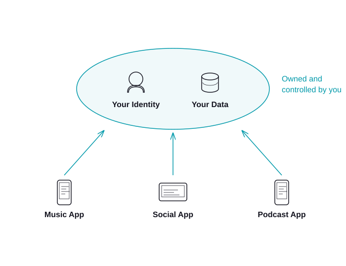

Part 1
Why the AT Protocol matters
Today, your identity and data live inside apps.

That's where the rot comes from.
- Lock-in — leaving means losing your network and history.
- Monopolization — the network effect rewards one winner.
- Enshittification — platforms degrade the experience to extract more value from users.
AT Protocol pulls them apart.

Identity and data live with you. Apps are interchangeable views.
What this unlocks
For people
- Own your data
- Switch apps without starting over
- Choose who hosts your stuff
- An exit ramp, always
For developers
- Plug into an existing network
- Compose with what others have built
- Build without a landlord — no platform can evict you
- Lower the bar to try your app — users adopt faster when leaving is painless
- Win by being good, not by being captive
Part 3
What's next
The App Wizard, where it's going
- Interactive tutorial for first-timers
- Community-contributed components and views
- Better previews of components and views
- Export to GitHub — and tangled.sh, its atproto equivalent
- Lower the floor for first-time builders, raise the ceiling for experienced ones
Want to build with it — or help build it? Let's talk after.
Other ways to get involved
- Use an atproto app — not just Bluesky. Try a few.
- Run a personal data server — own your data for real.
- Publish a lexicon — define a new kind of record.
- Build something small — a feed, a viewer, a bot, a tool.
- Show up — on the forum, in threads, at meetups.